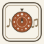

Turn the wheel. See what you made, hear it, and what it's called.
Outside: all twelve notes. Middle: the ones in your scale, lit. Tap one to add it or take it out; drag the ring to carry the whole scale to a new key. Inside: the scale's degrees, counted from the 1. Drag it to move the 1 and keep every note where it is: that's a new mode.
Start from a major scale. You can get to minor two ways, and they don't land in the same place.
Keep the 1 where it is and drop three notes a half step. Same home, darker notes: C major becomes C minor. That's its parallel minor.
Keep every note and slide the 1 down to the sixth. Same notes, a new home: C major becomes A minor. That's its relative minor, and it has the same key signature.
The seven modes of the major scale, brightest at the top. Each one down lowers a single note (circled) from the one above it. Tap a row to put it on the wheel.
Stack every other note of the scale, starting on each degree, and you get its chords. Capital numerals are major, small ones minor, ° diminished, + augmented. Tap to hear.
Each step clockwise is a fifth up and one more sharp (or one fewer flat). Neighbors share six of their seven notes, which is why songs move to them so easily. Outside: major keys. Inside: their relative minors. Tap one to put it on the wheel.
Two notes, one after the other. How far apart are they? Each one comes with a tune that starts on it, to help it stick.
Play your scale against a drone: open Drone in C. Sit on each note of the scale over the drone and listen to how it leans: the 1 and 5 rest, the 4 wants down, the 7 wants up.